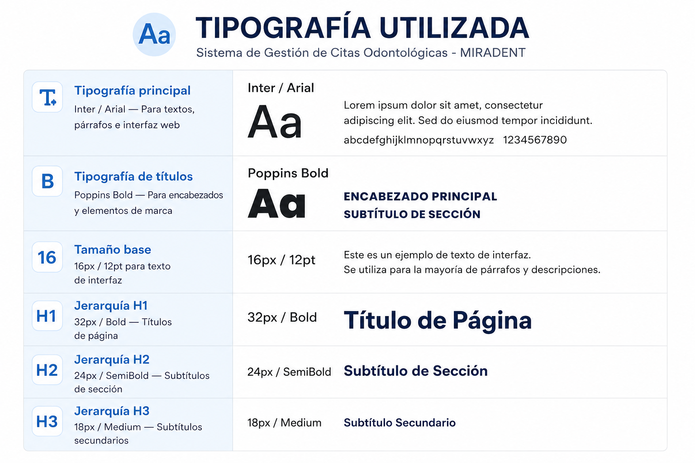

07
Diagramas

Diagrama de Clases
El diagrama de clases representa la estructura estática del sistema MIRADENT, mostrando las principales clases, sus atributos, métodos y relaciones. Este modelo sirve como base para el desarrollo del software, permitiendo organizar la lógica del negocio y facilitar la implementación del sistema en ASP.NET Core y Angular.

Arquitectura
El diagrama de arquitectura presenta la organización del sistema mediante una arquitectura de tres capas: presentación, lógica de negocio y datos. Esta estructura permite separar responsabilidades, mejorar el mantenimiento del software y garantizar una comunicación eficiente entre el frontend desarrollado en Angular, el backend en ASP.NET Core Web API y la base de datos SQL Server.

Modelo Entidad Relación
El Modelo Entidad Relación representa la estructura lógica de la base de datos del sistema MIRADENT. En él se identifican las entidades principales, sus atributos y las relaciones entre ellas, permitiendo almacenar y gestionar de forma organizada la información de pacientes, odontólogos, servicios, horarios, tratamientos y citas odontológicas.
08
Arquitectura del Proyecto
Arquitectura
El sistema MIRADENT implementa una arquitectura de tres capas, conformada por la capa de presentación, la capa de lógica de negocio y la capa de datos. El frontend será desarrollado con Angular y Tailwind CSS, proporcionando una interfaz moderna e intuitiva. La lógica de negocio estará implementada en ASP.NET Core Web API, encargada de procesar las solicitudes y aplicar las reglas del sistema. Finalmente, la información será almacenada en SQL Server, permitiendo una gestión segura y organizada de pacientes, odontólogos, servicios y citas. La comunicación entre el frontend y el backend se realizará mediante HTTP/HTTPS utilizando una API REST.
Patrones de Diseño
Para el desarrollo de MIRADENT se implementarán diferentes patrones de diseño con el fin de garantizar un sistema organizado, escalable y fácil de mantener:
Estándares
Metodología — Scrum
Product Backlog
Contiene todas las funcionalidades del proyecto MIRADENT, como autenticación, gestión de pacientes, odontólogos, servicios, horarios y citas. Estas tareas se priorizan según las necesidades del cliente y los objetivos del proyecto.
Sprint
El desarrollo se organiza en sprints de dos semanas, donde se implementan funcionalidades específicas del sistema, permitiendo realizar entregas incrementales y recibir retroalimentación continua.
Sprint Backlog
Incluye las tareas seleccionadas para cada sprint, como diseño en Figma, desarrollo del frontend en Angular, creación de la API en ASP.NET Core, base de datos en SQL Server y pruebas de cada módulo.
Daily Scrum
Reuniones breves entre los integrantes del equipo para revisar el avance del proyecto, identificar dificultades, planificar las actividades del día y asegurar el cumplimiento de los objetivos del sprint.
Review
Al finalizar cada sprint se presentan las funcionalidades desarrolladas, se verifican los requisitos implementados y se recopila la retroalimentación para realizar mejoras antes del siguiente sprint.
Sprint Retrospective
El equipo analiza los resultados del sprint, identifica fortalezas, oportunidades de mejora y define acciones que permitan optimizar el trabajo colaborativo y el desarrollo de las siguientes iteraciones.
Diagrama scrum

08.1
Manual de Marca
Logo Principal
Versiones del Logo

Paleta de Colores

Tipografía
